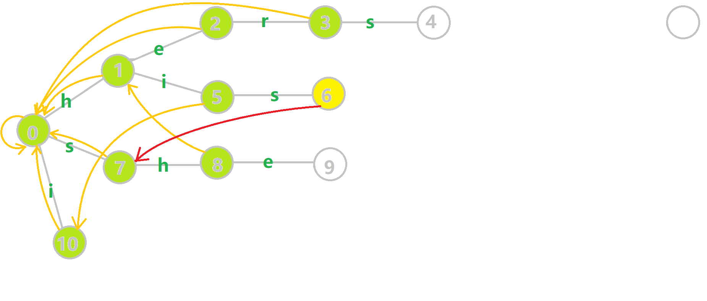
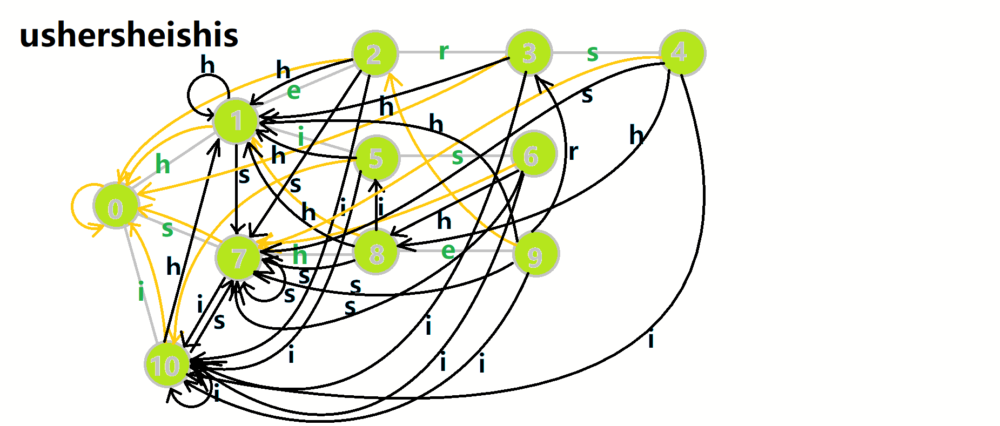

AC 自动机
概述
AC（Aho–Corasick）自动机是 以 Trie 的结构为基础 ，结合 KMP 的思想 建立的自动机，用于解决多模式匹配等任务．
AC 自动机本质上是 Trie 上的自动机．
解释
简单来说，建立一个 AC 自动机有两个步骤：
- 基础的 Trie 结构：将所有的模式串构成一棵 Trie；
- KMP 的思想：对 Trie 树上所有的结点构造失配指针．
建立完毕后，就可以利用它进行多模式匹配．
字典树构建
AC 自动机在初始时会将若干个模式串插入到一个 Trie 里，然后在 Trie 上建立 AC 自动机．这个 Trie 就是普通的 Trie，按照 Trie 原本的建树方法建树即可．
需要注意的是，Trie 中的结点表示的是某个模式串的前缀．我们在后文也将其称作状态．一个结点表示一个状态，Trie 的边就是状态的转移．
形式化地说，对于若干个模式串 𝑠1,𝑠2,⋯,𝑠𝑛s1,s2,⋯,sn ，将它们构建一棵字典树后的所有状态的集合记作 𝑄Q．
，将它们构建一棵字典树后的所有状态的集合记作 𝑄Q．
失配指针
AC 自动机利用一个 fail 指针来辅助多模式串的匹配．
状态 𝑢u 的 fail 指针指向另一个状态 𝑣v，其中 𝑣 ∈𝑄v∈Q，且 𝑣v 是 𝑢u 的最长后缀（即在若干个后缀状态中取最长的一个作为 fail 指针）．
fail 指针与 KMP 中的 next 指针相比：
- 共同点：两者同样是在失配的时候用于跳转的指针．
- 不同点：next 指针求的是最长 Border（即最长的相同前后缀），而 fail 指针指向所有模式串的前缀中匹配当前状态的最长后缀．
因为 KMP 只对一个模式串做匹配，而 AC 自动机要对多个模式串做匹配．有可能 fail 指针指向的结点对应着另一个模式串，两者前缀不同．
总结下来，AC 自动机的失配指针指向当前状态的最长后缀状态．
注意：AC 自动机在做匹配时，同一位上可匹配多个模式串．
构建指针
下面介绍构建 fail 指针的 基础思想 ：
构建 fail 指针，可以参考 KMP 中构造 next 指针的思想．
考虑字典树中当前的结点 𝑢u，𝑢u 的父结点是 𝑝p，𝑝p 通过字符 𝑐c 的边指向 𝑢u，即 trie(𝑝,𝑐) =𝑢trie(p,c)=u．假设深度小于 𝑢u 的所有结点的 fail 指针都已求得．
- 如果 trie(fail(𝑝),𝑐)trie(fail(p),c) 存在：则让 𝑢u 的 fail 指针指向 trie(fail(𝑝),𝑐)trie(fail(p),c)．相当于在 𝑝p 和 fail(𝑝)fail(p) 后面加一个字符 𝑐c，分别对应 𝑢u 和 fail(𝑢)fail(u)；
- 如果 trie(fail(𝑝),𝑐)trie(fail(p),c) 不存在：那么我们继续找到 trie(fail(fail(𝑝)),𝑐)trie(fail(fail(p)),c)．重复判断过程，一直跳 fail 指针直到根结点；
- 如果依然不存在，就让 fail 指针指向根结点．
如此即完成了 fail(𝑢)fail(u) 的构建．
例子
下面将使用若干张 GIF 动图来演示对字符串 𝚒i、𝚑𝚎he、𝚑𝚒𝚜his、𝚜𝚑𝚎she、𝚑𝚎𝚛𝚜hers 组成的字典树构建 fail 指针的过程：
- 黄色结点：当前的结点 𝑢u．
- 绿色结点：表示已经 BFS 遍历完毕的结点．
- 橙色的边：fail 指针．
- 红色的边：当前求出的 fail 指针．

我们重点分析结点 66 的 fail 指针构建：

找到 66 的父结点 55，fail(5) =10fail(5)=10．然而结点 1010 没有字母 𝚜s 连出的边；继续跳到 1010 的 fail 指针，fail(10) =0fail(10)=0．发现 00 结点有字母 𝚜s 连出的边，指向 77 结点；所以 fail(6) =7fail(6)=7．
下图展示了构建完毕的状态：

字典树与字典图
关注构建函数 build，该函数的目标有两个，一个是构建 fail 指针，一个是构建自动机．相关变量定义如下：
tr[u].son[c]：有两种理解方式．我们可以简单理解为字典树上的一条边，即 trie(𝑢,𝑐)trie(u,c)；也可以理解为从状态（结点）𝑢u 后加一个字符 𝑐c 到达的状态（结点），即一个状态转移函数 trans(𝑢,𝑐)trans(u,c)．为了方便，下文中我们将用第二种理解方式．- 队列
q：用于 BFS 遍历字典树． tr[u].fail：结点 𝑢u 的 fail 指针．
实现
C++Python
---|---
---|---
解释
build 函数将结点按 BFS 顺序入队，依次求 fail 指针．这里的字典树根结点为 00，我们将根结点的子结点一一入队．若将根结点入队，则在第一次 BFS 的时候，会将根结点儿子的 fail 指针标记为本身．因此我们将根结点的儿子一一入队，而不是将根结点入队．
然后开始 BFS：每次取出队首的结点 𝑢u（fail(𝑢)fail(u) 在之前的 BFS 过程中已求得），然后遍历字符集（这里是 0 ∼250∼25，对应 𝚊 ∼𝚣a∼z，即 𝑢u 的各个子结点）：
- 如果 trans(𝑢,𝑐)trans(u,c) 存在，我们就将 trans(𝑢,𝑐)trans(u,c) 的 fail 指针赋值为 trans(fail(𝑢),𝑐)trans(fail(u),c)．根据之前的描述，我们应该用
while循环，不停地跳 fail 指针，判断是否存在字符 𝑐c 对应的结点，然后赋值，但此处通过特殊处理简化了这些代码，将在下文说明； - 否则，令 trans(𝑢,𝑐)trans(u,c) 指向 trans(fail(𝑢),𝑐)trans(fail(u),c) 的状态．
这里的处理是，通过 else 语句的代码修改字典树的结构，将不存在的字典树的状态链接到了失配指针的对应状态．在原字典树中，每一个结点代表一个字符串 𝑆S，是某个模式串的前缀．而在修改字典树结构后，尽管增加了许多转移关系，但结点（状态）所代表的字符串是不变的．
而 trans(𝑆,𝑐)trans(S,c) 相当于是在 𝑆S 后添加一个字符 𝑐c 变成另一个状态 𝑆′S′．如果 𝑆′S′ 存在，说明存在一个模式串的前缀是 𝑆′S′，否则我们让 trans(𝑆,𝑐)trans(S,c) 指向 trans(fail(𝑆),𝑐)trans(fail(S),c)．由于 fail(𝑆)fail(S) 对应的字符串是 𝑆S 的后缀，因此 trans(fail(𝑆),𝑐)trans(fail(S),c) 对应的字符串也是 𝑆′S′ 的后缀．
换言之在 Trie 上跳转的时侯，我们只会从 𝑆S 跳转到 𝑆′S′，相当于匹配了一个 𝑆′S′；但在 AC 自动机上跳转的时侯，我们会从 𝑆S 跳转到 𝑆′S′ 的后缀，也就是说我们匹配一个字符 𝑐c，然后舍弃 𝑆S 的部分前缀．舍弃前缀显然是能匹配的．同时如果文本串能匹配 𝑆S，显然它也能匹配 𝑆S 的后缀，所以 fail 指针同样在舍弃前缀．所谓的 fail 指针其实就是 𝑆S 的一个后缀集合．
Trie 的结点的孩子数组 son 还有另一种比较简单的理解方式：如果在位置 𝑢u 失配，我们会跳转到 fail(𝑢)fail(u) 的位置．注意这会导致我们可能沿着 fail 数组跳转多次才能来到下一个能匹配的位置．所以我们可以用 son 直接记录记录下一个能匹配的位置，这样保证了程序的时间复杂度．
此处对字典树结构的修改，可以使得匹配转移更加完善．同时它将 fail 指针跳转的路径做了压缩，使得本来需要跳很多次 fail 指针变成跳一次．
过程
这里依然用若干张 GIF 动图展示构建过程：

- 蓝色结点：BFS 遍历到的结点 𝑢u．
- 蓝色的边：当前结点下，AC 自动机修改字典树结构连出的边．
- 黑色的边：AC 自动机修改字典树结构连出的边．
- 红色的边：当前结点求出的 fail 指针．
- 黄色的边：fail 指针．
- 灰色的边：字典树的边．
可以发现，众多交错的黑色边将字典树变成了 字典图 ．图中省略了连向根结点的黑边（否则会更乱）．我们重点分析一下结点 55 遍历时的情况．我们求 trans(5,𝚜) =6trans(5,s)=6 的 fail 指针：

本来的策略是找 fail 指针，于是我们跳到 fail(5) =10fail(5)=10 发现没有 𝚜s 连出的字典树的边，于是跳到 fail(10) =0fail(10)=0，发现有 trie(0,𝚜) =7trie(0,s)=7，于是 fail(6) =7fail(6)=7；但是有了黑边、蓝边，我们跳到 fail(5) =10fail(5)=10 之后直接走 trans(10,𝚜) =7trans(10,s)=7 就走到 77 号结点了．
这就是 build 完成的两件事：构建 fail 指针和建立字典图．这个字典图也会在查询的时候起到关键作用．
多模式匹配
接下来分析匹配函数 query：
实现
C++Python
---|---
---|---
解释
这里 𝑢u 作为字典树上当前匹配到的结点，res 即返回的答案．循环遍历匹配串，𝑢u 在字典树上跟踪当前字符．利用 fail 指针找出所有匹配的模式串，并累加到答案中．然后将匹配到的串的出现次数清零，这样就不会重复统计同一个串．在上文中我们分析过，字典树的结构其实就是一个 trans 函数，而构建好这个函数后，在匹配字符串的过程中，我们会舍弃部分前缀达到最低限度的匹配．fail 指针则指向了更多的匹配状态．最后上一份图．对于刚才的自动机：

我们从根结点开始尝试匹配 𝚞𝚜𝚑𝚎𝚛𝚜𝚑𝚎𝚒𝚜𝚑𝚒𝚜ushersheishis，那么 𝑝p 的变化将是：

- 红色结点：𝑝p 结点．
- 粉色箭头：𝑝p 在自动机上的跳转．
- 蓝色的边：成功匹配的模式串．
- 蓝色结点：示跳 fail 指针时的结点（状态）．
效率优化
题目请参考洛谷 P5357【模板】AC 自动机．
因为我们的 AC 自动机中，每次匹配，会一直向 fail 边跳来找到所有的匹配，但是这样的效率较低，在某些题目中会超时．
那么需要如何优化呢？首先需要了解到 fail 指针的一个性质：一个 AC 自动机中，如果只保留 fail 边，那么剩余的图一定是一棵树．
这是显然的，因为 fail 不会成环，且深度一定比现在低，所以得证．
这样 AC 自动机的匹配就可以转化为在 fail 树上的链求和问题，只需要优化一下该部分就可以了．
这里提供两种思路．
拓扑排序优化
观察到时间主要浪费在在每次都要跳 fail．如果我们可以预先记录，最后一并求和，那么效率就会优化．
于是我们按照 fail 树，做一次内向树上的拓扑排序，就能一次性求出所有模式串的出现次数．
build 函数在原先的基础上，增加了入度统计一部分，为拓扑排序做准备．
构建
---|---
然后我们在查询的时候就可以只为找到结点的 `ans` 打上标记，在最后再用拓扑排序求出答案．
查询
---|---
最后是主函数：
主函数
---|---
模板题 [Luogu P5357「模板」AC 自动机](https://www.luogu.com.cn/problem/P5357) 拓扑排序优化参考代码
---|---
DFS 优化
和拓扑排序的思路接近，不过我们使用 DFS 来代替拓扑排序．其实这两种方法本质上是相同的，都是将 fail 树的子树求和．
完整代码请见总结模板 3．
AC 自动机上 DP
这部分将以 [P2292 [HNOI2004] L 语言](https://www.luogu.com.cn/problem/P2292) 为例题讲解．
不难想到一个朴素的思路：建立 AC 自动机，在 AC 自动机上对于所有 fail 指针的子串转移，最后取最大值得到答案．
主要代码如下．若不熟悉代码中的类型定义，可以先看末尾的完整代码：
查询部分主要代码
---|---
但是这样的思路复杂度不是线性（因为要跳每个结点的 fail），会在第二个子任务中超时，所以我们需要进行优化．
我们再看看题目的特殊性质，我们发现所有单词的长度只有 2020，所以可以想到状态压缩优化．
我们发现，目前的时间瓶颈主要在跳 fail 这一步，如果我们可以将这一步优化到 𝑂(1)O(1)，就可以保证整个问题在严格线性的时间内被解出．
我们可以将前 2020 位字母中，可能的子串长度存下来，并压缩到状态中，存在每个子结点中．
那么我们在 `build` 的时候就可以这么写：
构建 fail 指针
---|---
然后查询时就可以去掉跳 fail 的循环，将代码简化如下：
查询
---|---
我们的 `tr[u].stat` 维护的是从结点 𝑢u 开始，整条 fail 链上的长度集（因为长度集小于 3232 所以不影响），而 `st` 则维护的是查询字符串走到现在，前 3232 位（因为状态压缩自然溢出）的长度集．
`&` 运算后结果不为 00，则代表两个长度集的交集非空，我们此时就找到了一个匹配．
[P2292 [HNOI2004] L 语言](https://www.luogu.com.cn/problem/P2292) 完整代码
---|---
总结
时间复杂度：定义 |𝑠𝑖||si| 是模板串的长度，|𝑆||S| 是文本串的长度，|Σ||Σ| 是字符集的大小（常数，一般为 2626）．如果连了 trie 图，时间复杂度就是 𝑂(∑|𝑠𝑖| +𝑛|Σ| +|𝑆|)O(∑|si|+n|Σ|+|S|)，其中 𝑛n 是 AC 自动机中结点的数目，并且最大可以达到 𝑂(∑|𝑠𝑖|)O(∑|si|)．如果不连 trie 图，并且在构建 fail 指针的时候避免遍历到空儿子，时间复杂度就是 𝑂(∑|𝑠𝑖| +|𝑆|)O(∑|si|+|S|)．
模板题 Luogu P3808 AC 自动机（简单版） 参考代码
---|---
模板题 [Luogu P3796 AC 自动机（简单版 II）](https://www.luogu.com.cn/problem/P3796) 参考代码
---|---
模板题 Luogu P5357「模板」AC 自动机 DFS 优化参考代码
---|---
* * *
> __本页面最近更新： 2026/1/7 08:56:54，[更新历史](https://github.com/OI-wiki/OI-wiki/commits/master/docs/string/ac-automaton.md)
> __发现错误？想一起完善？[在 GitHub 上编辑此页！](https://oi-wiki.org/edit-landing/?ref=/string/ac-automaton.md "edit.link.title")
> __本页面贡献者：[Ir1d](https://github.com/Ir1d), [Tiphereth-A](https://github.com/Tiphereth-A), [sshwy](https://github.com/sshwy), [ksyx](https://github.com/ksyx), [Marcythm](https://github.com/Marcythm), [orzAtalod](https://github.com/orzAtalod), [Xeonacid](https://github.com/Xeonacid), [c-forrest](https://github.com/c-forrest), [Enter-tainer](https://github.com/Enter-tainer), [GavinZhengOI](https://github.com/GavinZhengOI), [Henry-ZHR](https://github.com/Henry-ZHR), [iamtwz](https://github.com/iamtwz), [shuzhouliu](https://github.com/shuzhouliu), [383494](https://github.com/383494), [abc1763613206](https://github.com/abc1763613206), [alphagocc](https://github.com/alphagocc), [aofall](https://github.com/aofall), [Chrogeek](https://github.com/Chrogeek), [CoelacanthusHex](https://github.com/CoelacanthusHex), [Dafenghh](https://github.com/Dafenghh), [DanJoshua](https://github.com/DanJoshua), [Early0v0](https://github.com/Early0v0), [Gesrua](https://github.com/Gesrua), [GoodCoder666](https://github.com/GoodCoder666), [HeRaNO](https://github.com/HeRaNO), [kenlig](https://github.com/kenlig), [liangbob2023](https://github.com/liangbob2023), [lyccrius](https://github.com/lyccrius), [Menci](https://github.com/Menci), [opsiff](https://github.com/opsiff), [ouuan](https://github.com/ouuan), [partychicken](https://github.com/partychicken), [Persdre](https://github.com/Persdre), [r-value](https://github.com/r-value), [Rickyxrc](https://github.com/Rickyxrc), [Ruakker](https://github.com/Ruakker), [shawlleyw](https://github.com/shawlleyw), [StudyingFather](https://github.com/StudyingFather), [sun2snow](https://github.com/sun2snow), [szdytom](https://github.com/szdytom), [Unnamed2964](https://github.com/Unnamed2964), [XuYueming520](https://github.com/XuYueming520), [zica87](https://github.com/zica87), [ZnPdCo](https://github.com/ZnPdCo), [ZXyaang](https://github.com/ZXyaang), [qq2964](https://github.com/qq2964), [rickyxrc](https://github.com/rickyxrc)
> __本页面的全部内容在**[CC BY-SA 4.0](https://creativecommons.org/licenses/by-sa/4.0/deed.zh) 和 [SATA](https://github.com/zTrix/sata-license)** 协议之条款下提供，附加条款亦可能应用